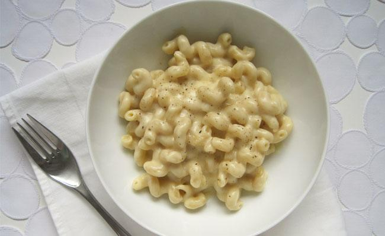
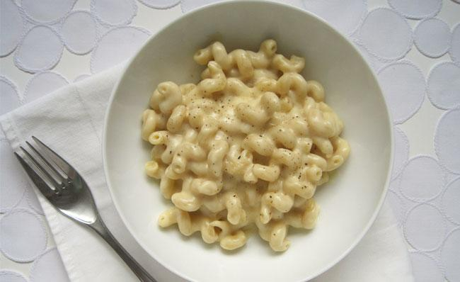

Meri's Magical Mac n' Cheese
| Difficulty | Intermediate |
| Prep Time | 15 Minutes |
| Cooking Time | 1 Hour |
| Total Time | 1.25 Hours |
This is my favorite study snack. Warm, cheesy, and creamy. What could be better?
| Difficulty | Intermediate |
| Prep Time | 15 Minutes |
| Cooking Time | 1 Hour |
| Total Time | 1.25 Hours |
This is my favorite study snack. Warm, cheesy, and creamy. What could be better?
Get your tools and your ingredients ready!
In addition to ingredients, you also need the following tools
Here are three easy steps to make my favorite mac & cheese.
Start by cooking a box of pasta according to the directions in a medium-sized sauce pan. Traditionally elbow pasta use to make mac & cheese, but sometimes I like to mix it up
by using a similar tube-shaped pasta like rigatoni. Luckily, pasta pretty much all tastes the same, your selection just depends
on preference or whatever you have in your cabinets (if you're like me).
After you drain the pasta and set it aside, you can use the same sauce pan to make a roux. Roux can feel tricky to make, but it's actually not at all. Start by adding equal parts butter and flour to the pan over medium heat. Using a wooden spoon start incorporating by making a figure eight. The mixture will start to thicken and bubble. When it's a pale cream color and puffy in nature, start adding about a cup and a half of milk in. Once incorporated and nice and thick, switch to a whisk. Now, begin adding your cheese. I prefer a blend of cheddars, however the world is your oyster here. Use the whisk to mix in a quarter teaspoon of mustard powder, salt and pepper to taste, and your cheese. Soon your roux will have transformed into a delicious cheese sauce.

Last, add your pasta to the cheese sauce. You can plate it right away and garnish with pepper and more cheese, or you can put the mac in a 9x13 pan,
top it with breadcrumbs, and throw it in the oven for 10-15 minutes on 350 degrees farenheit for extra oomph. No matter how you finish it, make sure
you share it with friends.

The best thing about mac & cheese is you can be so creative with it. I've seen variations of recipes which use avocado instead of cheese in the sauce if you're into that sort of thing. It's also great because most everyone loves it. It can also be very vegan or gluten-free friendly with the proper ingredients. This makes This dish the best thing to make your friends if you know they're coming over to eat all your snacks.
In the words of Emeril Lagassi:
"Bam"